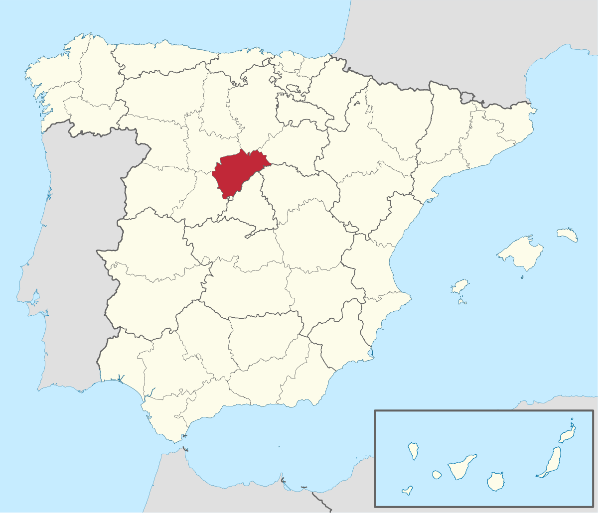
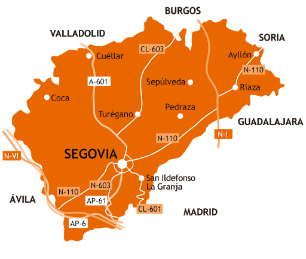
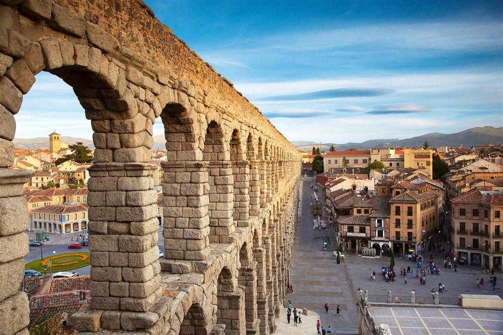
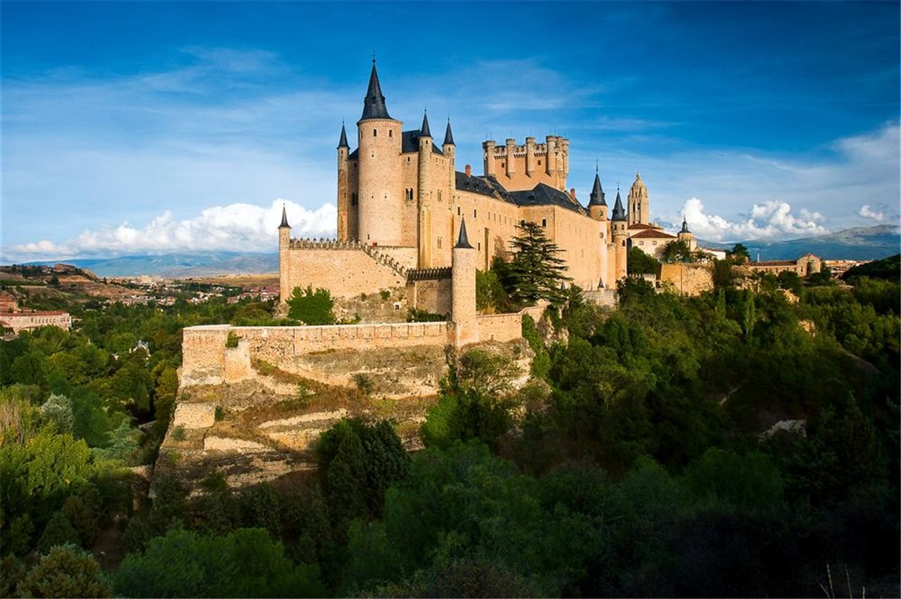
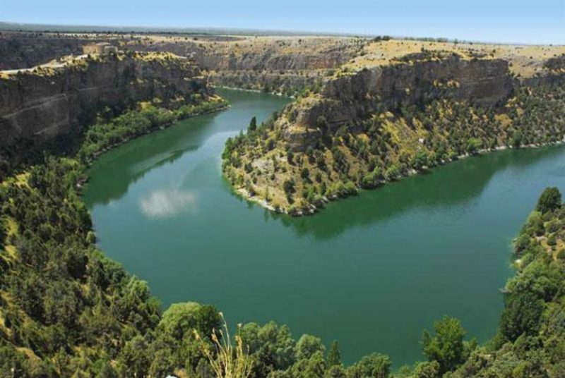

Informacion
Localización
Localidades principales
Geografía de la provincia
Historia
Cultura
Naturaleza
Tradiciones
Otros aspectos de interés
Segovia
_______________________________________________________________________________________________________________________________________________________________
Localización
Segovia es una ciudad y municipio español en la parte meridional de la comunidad autónoma de Castilla y León, capital de la provincia del mismo nombre. Se
sitúa en la confluencia de los ríos Eresma y Clamores, al pie de la sierra de Guadarrama. La ciudad vieja y el acueducto de Segovia fueron declarados
Patrimonio de la Humanidad por la Unesco en 1985. El acueducto es considerado la obra de ingeniería civil romana más importante de España, y es uno de
los monumentos más significativos y mejor conservados de la Antigua Roma en la península ibérica. El término municipal cuenta con una población de 52.057
habitantes (INE, 2020).

_______________________________________________________________________________________________________________________________________________________________
Localidades principales
Localización Province Segovia : País España, Comunidad Autónoma Castilla y León.
Grandes ciudades : Segovia, Cuéllar, El Espinar, Palazuelos de Eresma, Real Sitio de San Ildefonso, La Lastrilla, Cantalejo, San Cristóbal de Segovia, Nava
de la Asunción, Carbonero el Mayor, Riaza, Coca, Villacastín, Hontanares de Eresma, Torrecaballeros, Espirdo, Navas de Oro, Cantimpalos, Ayllón, Valverde del
Majano, Trescasas, Navalmanzano, Sepúlveda, Turégano, Santa María la Real de Nieva, Otero de Herreros, Sanchonuño, Mozoncillo, Abades, Fuentepelayo, Bernuy
de Porreros, Chañe, Boceguillas, Vallelado, Gomezserracín, Cabezuela, Marugán, Villaverde de Íscar, Aguilafuente y Ortigosa del Monte.

_______________________________________________________________________________________________________________________________________________________________
Geografía de la provincia
Ubicacion
Segovia se halla situada en el interior de la península ibérica, inmediatamente al norte de la sierra de Guadarrama, en la base de las montañas y al sur de la Submeseta Norte. El centro de la ciudad se encuentra a una altitud de 1002 metros sobre el nivel del mar, mientras que la altitud del municipio varía entre los 880 metros en el último tramo en el municipio del río Eresma, en el norte del mismo, y los 1400 metros en el cerro de la Cachiporra, al sur del municipio esta localidad forma parte de la ruta principal del Camino de Santiago de Madrid.Clima
De acuerdo a la clasificación climática de Köppen se puede considerar el clima de Segovia como de transición entre el tipo Csa (mediterráneo) y el tipo Csb (mediterráneo oceánico). En efecto el clima puede ser de tipo Csa en las zonas bajas del municipio y de tipo Csb en las zonas de mayor altitud, incluso en la parte más alta de la zona urbana.6El clima de Segovia está determinado por su elevada altitud, su proximidad al sistema Central y su alejamiento de la costa; la temperatura anual tiene un promedio de 11,5 °C, con mínimas absolutas en diciembre de −17,0 °C (6 de enero de 1938) y máximas en julio de 39,7 °C (16 de julio de 1920);7 la precipitación anual es de 464 mm anuales, lo que hace de la provincia un rincón húmedo en el contexto de la Meseta. La vegetación predominante en las áreas montañosas es de pino negral, pino piñonero, silvestre, roble, haya, piorno y enebro, dejando paso en la zona sedimentaria a la encina y a las superficies cerealísticas, con paisajes de trigales, rastrojos y barbecheras.
A continuación se muestra una tabla con los valores climatológicos en el periodo de referencia comprendido entre los años 1988 y 2010 en el observatorio de la Aemet de Segovia a 1005 m s. n. m.. Los valores extremos corresponden a los registrados en el observatorio mencionado de Segovia a partir de 1988, pero también a los valores registrados en el antiguo observatorio de la AEMET situado en el Instituto Mariano Quintanilla a 990 m s. n. m. en el periodo 1920-1986.
Ver video desde youtube - Video realizado por Mega Ciudades
_______________________________________________________________________________________________________________________________________________________________
Historia
El poblamiento humano en el entorno de lo que hoy es Segovia se remonta a hace unos 60 000 años, fecha en que ha sido datada la ocupación neandertal del Abrigo
del Molino en el valle del Eresma, a tan solo 500 m del emplazamiento del alcázar. Fueron pues, los neandertales, los primeros en ocupar el territorio de lo que
con el tiempo se convirtió en la ciudad de Segovia.
Cerca de este abrigo, en la cueva de la Tarascona y en otros emplazamientos al aire libre en el entorno periurbano de Segovia, se localizan evidencias del
Calcolítico y la Edad del Bronce. En el lugar que hoy ocupa el alcázar existía un castro celtíbero, del que se conocen algunas evidencias, como su posible
foso. Durante la época romana, Segovia pertenecía al convento jurídico de Clunia. En la Hispania visigoda fue sede episcopal de la Iglesia católica, sufragánea
de la Archidiócesis de Toledo que comprendía la antigua provincia romana de Cartaginense en la diócesis de Hispania.
Se cree que la ciudad fue abandonada tras la invasión islámica. Tras la conquista de Toledo por Alfonso VI de León, el yerno del rey Alfonso VI, el conde
Raimundo de Borgoña, junto con el primer obispo de su reconstituida diócesis, empezó la repoblación de Segovia en 10884 con cristianos procedentes del norte
de la península y de más allá de los Pirineos, dotándola de un amplio concejo cuyas tierras cruzaban la sierra de Guadarrama e incluso la línea del Tajo.
Durante el siglo xii sufrió importantes disturbios en contra de su gobernador, Álvar Fáñez, y posteriormente como parte de las luchas del reinado de Urraca
de Castilla. A pesar de estos desórdenes, su situación en las rutas de la trashumancia la convirtió en un importante centro del comercio de la lana y de las
manufacturas textiles (cuya existencia está documentada desde el siglo xii). El final de la Edad Media es una época de esplendor, en la que acoge una
importante aljama hebrea; sienta las bases de una poderosa industria pañera; desarrolla una espléndida arquitectura gótica y es corte de los reyes de la
Casa de Trastámara (ya Alfonso X el Sabio había acondicionado el alcázar como residencia real). Finalmente, en la iglesia de San Miguel de Segovia Isabel
la Católica es proclamada reina de Castilla el 13 de diciembre de 1474.

Como todos los centros textiles castellanos, se unió a la sublevación de las comunidades, teniendo una intervención destacada, al mando de Juan Bravo. A pesar
de la derrota de las comunidades, el auge económico de la ciudad continuó durante el siglo xvi, llegando en 1594 a 27 000 habitantes. Después, como casi todas
las ciudades castellanas, entró en decadencia, de forma que apenas un siglo después, en 1694, sólo contaba con 8000 habitantes.
A principios del siglo xviii se intentó revitalizar su industria textil, con escaso éxito. En la segunda mitad del siglo, dentro de los impulsos ilustrados de
Carlos III, se hace un nuevo intento de revitalización creando la Real Compañía Segoviana de Manufacturas de Lana (1763). Sin embargo, la falta de competitividad
de su producción hizo que la corona le retirase su patrocinio (1779). También en 1764 se había inaugurado el Real Colegio de Artillería, la primera academia
militar de España, que todavía se encuentra en la ciudad.
En 1808 fue saqueada por las tropas francesas durante la guerra de la Independencia. Durante la primera Guerra Carlista las tropas del pretendiente Carlos de
Borbón atacaron sin éxito la ciudad. Durante el siglo xix y primera mitad del xx, experimentó una recuperación demográfica fruto de una relativa revitalización
económica.

_______________________________________________________________________________________________________________________________________________________________
Cultura
Festividades
- Fiesta de la Virgen de la Fuencisla (25 de septiembre), patrona de Segovia. El día de la mayor celebración es el último domingo del mes. Dos jueves antes la Virgen sube desde su santuario en la alameda de la Fuencisla a la catedral para empezar la novena. Durante los nueve días siguientes se celebra la novena en la catedral, en la que se canta el himno de la Fuencisla, y el último domingo del mes la Virgen vuelve a su santuario. Puesto que la Virgen es capitán general de Artillería (lo cual viene indicado por el bastón de mando y el fajín que tiene a sus pies) desde el 24 de septiembre de 1916, en sus viajes entre el santuario y la catedral va acompañada por los cadetes de la Academia de Artillería y por la banda de música. El día que vuelve al santuario va acompañada por los cadetes hasta la plaza del Azoguejo, donde se canta una salve. Hasta hace unos años había exhibiciones de jotas castellanas en la alameda de la Fuencisla a la llegada de la Virgen; últimamente las jotas se bailan en el propio Azoguejo.
- Fiesta de San Lorenzo (en torno al 10 de agosto), es la fiesta de uno de los barrios más populares de la ciudad.
- Ferias y Fiestas de San Juan y San Pedro (entre los días 24 y 29 de junio), son las fiestas más señaladas de la ciudad y se vienen celebrando desde el siglo xv.
- Festividad de San Frutos (25 de octubre), patrón de Segovia. A media mañana se canta en la catedral el villancico de San Frutos, tras el cual suele haber distintas actividades en la plaza Mayor, como un pregón, un concierto de la Banda de la Unión Musical Segoviana, exposiciones de micología, etc. En los últimos años los pasteleros de Segovia han inventado un postre del santo. En la noche anterior a San Frutos se congregan los segovianos ante la imagen del santo que hay a la puerta de la catedral para verle pasar la hoja del libro que sostiene.
- Semana Santa: Segovia tiene diez cofradías, que son: la Oración en el Huerto (perteneciente al barrio de San Lorenzo), la Resurrección del Señor (perteneciente al barrio de Nueva Segovia), Cristo con la Cruz a Cuestas (perteneciente a ADEMAR), el Santo Cristo de la Cruz (perteneciente al barrio del Cristo del Mercado), el Santo Cristo de San Marcos (perteneciente al barrio de San Marcos), la Soledad al Pie de la Cruz (perteneciente al barrio de San Millán), Nuestra Señora de la Piedad (perteneciente al barrio de San José), Real Cofradía de la Santa Esclavitud (perteneciente al barrio de El Salvador), Feligresía de San Andrés (perteneciente al barrio de San Andrés) y la Soledad Dolorosa (perteneciente al barrio de Santa Eulalia).
_______________________________________________________________________________________________________________________________________________________________
Naturaleza
La provincia de Segovia ofrece a los amantes de la naturaleza unos grandes espacios naturales y áreas recreativas. ... Parques Naturales como las Hoces
del Duratón o las Hoces del Riaza, el Parque Nacional de Guadarrama o la Sierra de Ayllón, son garantías suficientes para conseguir un buen plan natural
con éxito.

_______________________________________________________________________________________________________________________________________________________________
Tradiciones
La Virgen de la Fuencisla es trasladada en romería desde su santuario en la Alameda de la Fuencisla hasta la Catedral de Segovia. Allí se queda durante nueve días, hasta que vuelve a su hogar el último día del mes de septiembre. En la romería es acompañada por los cadetes de la Academia de Infantería, dado que la virgen ostenta el cargo de Capitán General de Artillería. La otra gran fiesta patronal es en honor de San Frutos, los eventos se concentran en los alrededores de la Plaza Mayor y la Catedral. Hay muchas actividades musicales, pero si hay que destacar sólo una, es el gran coro popular que forman los segovianos a las puertas de la catedral para entonar el Villancico de San Frutos. El otro momento álgido de las fiestas es cuando se produce el milagro del santo pasando una hoja del Libro de la Vida.
_______________________________________________________________________________________________________________________________________________________________
Otros aspectos de interés
Para los que busquen pasar un fin de semana de ocio y aventura, Segovia cuenta con una gran variedad de actividades para todo tipo de público.
Si eres un amante de las alturas, te recomendamos un paseo en Globo para disfrutar al máximo de los paisajes. Junto con las rutas a caballo por la sierra, pueden ser de las mejores actividades de aventura que podemos encontrar en Segovia.
Para los que quieras recorrer las calles más emblemáticas de la zona, proponemos diferentes gymkhanas históricas o de misterio, en las que poder conocer un
poquito más la historia de la ciudad. Además, la ruta histórica se puede realizar en segway, un divertido transporte que te hará la ruta mucho más amena.
Los jardines del Alcázar se levantan en la explanada donde se encontraba la antigua catedral y el palacio episcopal, y comenzaron a crearse con motivo del
matrimonio en el alcázar de Felipe II con Ana de Austria en 1570, retirando las ruinas que aún persistían, aunque no se llevó a cabo por completo hasta la
visita de Fernando VII en el siglo xix. Entre 1816 y 1817 comenzaron a plantarse los primeros árboles, y se cerraron con la verja que existe actualmente.
Fueron arrasados por el incendio sufrido en el alcázar en 1862, y nuevamente recuperados en 1882.
| Lunes | +9° | +1° | |
| Martes | +9° | +2° | |
| Miércoles | +17° | +4° | |
| Jueves | +13° | +5° | |
| Viernes | +10° | +3° | |
| Sábado | +10° | 0° |
_______________________________________________________________________________________________________________________________________________________________
Mapa Castilla y Leon

Correo: david.alomon@educa.cyl.es